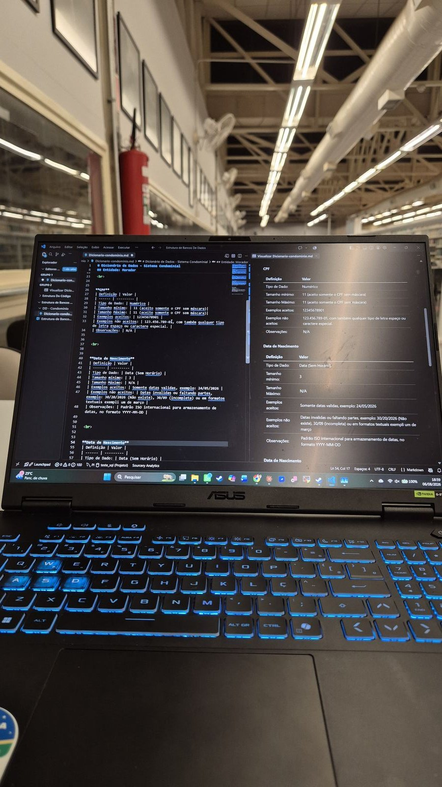
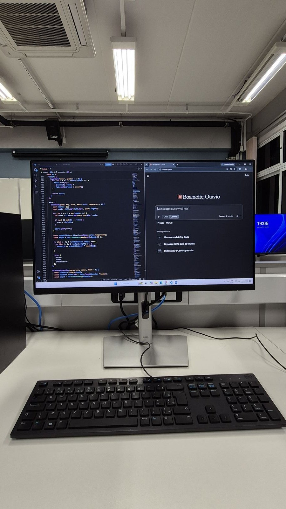

Sobre
Quem sou
Atuo na área de desenvolvimento de software em ambiente corporativo, com foco em construção e manutenção de aplicações, banco de dados e automação de processos. Tenho experiência prática com PL/SQL e SQL em ambiente Oracle, e com desenvolvimento web em JavaScript, HTML e CSS.

Minha base inclui modelagem de dados, lógica de programação, estrutura de dados, orientação a objetos, versionamento com Git e fundamentos de engenharia de software. Sou estudante de Sistemas de Informação, com interesse contínuo em desenvolvimento full-stack, integração de sistemas e melhoria de processos através da tecnologia.

- FocoFull-stack · Banco de dados · Automação
- FormaçãoSistemas de Informação — PUC-Campinas
- LocalizaçãoPaulínia, SP
- IdiomasPortuguês (nativo) · Inglês A2 · Espanhol básico